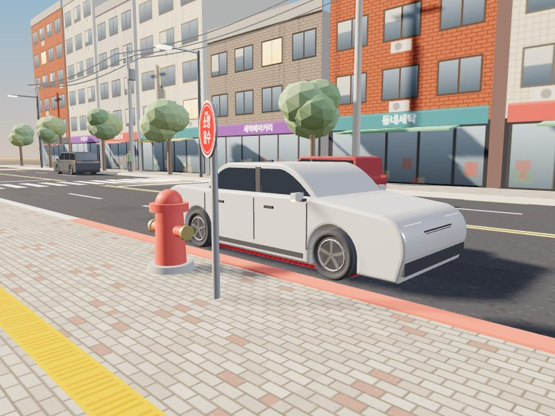

시민이 직접 신고하는 불법주정차
잠깐 세운 그 차,
누군가의 길을
막고 있습니다
소방차가 물을 대야 하는 소화전 앞, 아이들이 건너는 학교 앞 길. 이런 곳에 세운 차는 휴대폰 사진 두 장으로 누구나 신고할 수 있습니다.
- 6곳주민신고 대상 장소
- 2장1분 간격 사진
- 앱 하나안전신문고
배경 그림: 해 질 녘의 시내 거리를 위에서 내려다본 모습입니다. 교차로, 상가, 초등학교, 버스정류소가 있습니다.
소화전 주변
앞뒤 5m 이내불이 나면 소방차는 가장 가까운 소화전에 호스를 연결합니다. 그 앞에 차 한 대가 서 있으면 다른 소화전을 찾아 다시 움직여야 합니다.
적색 연석 구간은 과태료 2배승용차 기준 8만 원
이렇게 알아보세요 — 연석과 도로 가장자리에 빨간 칠, 노면에 "소방시설 주정차금지" 표시가 있습니다.
장면 설명: 흰 승용차가 빨간 연석이 칠해진 소화전 바로 앞에 비상등을 켜고 서 있습니다. 경광등을 켠 소방차가 도착하지만 승용차 뒤에 멈춰 소화전에 붙지 못하고, 소방관이 내려 손짓합니다. 소화전 앞뒤로 5미터 범위가 표시됩니다.
교차로 모퉁이
연석이 꺾이는 모퉁이에서 5m 이내모퉁이에 선 차는 옆 길에서 나오는 차와 건너려는 사람을 서로 보지 못하게 가립니다. 우회전하는 차가 보행자를 늦게 발견하게 됩니다.
이렇게 알아보세요 — 연석이 꺾이는 지점에서 두 길 방향으로 각각 5m 안쪽입니다.
장면 설명: 교차로 모퉁이에 승용차가 서 있습니다. 우회전하던 차가 모퉁이 차에 가려져 있던 보행자를 늦게 보고 급정거합니다. 모퉁이에서 두 길 방향으로 각각 5미터가 표시됩니다.
버스정류소
표지판 기준 앞뒤 10m 이내버스가 정류소에 붙지 못하면 승객은 차도 한가운데에서 타고 내립니다. 어르신과 휠체어 이용자에게는 그 한 걸음이 위험합니다.
이렇게 알아보세요 — 정류소 표지판이나 노면의 노란 "버스정류소" 표시를 기준으로 합니다.
장면 설명: 버스정류소 앞에 승용차가 서 있어 시내버스가 정류소에 붙지 못하고 둘째 차로에 멈춥니다. 문이 열리고 지팡이를 짚은 어르신이 차도로 내려 인도까지 걸어갑니다. 표지판 앞뒤로 10미터 범위가 표시됩니다.
횡단보도
정지선을 넘어 멈춘 차정지선을 넘어 횡단보도에 걸친 차 때문에 건너던 사람이 차 사이로 돌아가야 합니다. 키가 작은 아이는 차에 가려 운전자 눈에 보이지 않습니다.
이렇게 알아보세요 — 횡단보도 앞 흰 정지선을 차가 넘어서 서 있으면 해당됩니다.
장면 설명: 승용차가 흰 정지선을 넘어 횡단보도 위에 서 있습니다. 건너던 어른 둘과 아이 하나가 차를 피해 비켜서 건넙니다. 넘은 정지선이 빨갛게 강조됩니다.
초등학교 앞
어린이보호구역
초등학교 정문 앞 양방향 도로 · 평일 08~20시
등하굣길 아이들은 서 있는 차 사이에서 갑자기 길로 나옵니다. 아이 눈높이에서 주차된 승용차는 벽과 같습니다.
기준은 표지판입니다 — 어린이보호구역 안에서 초등학교 정문 앞 양방향 도로가 대상입니다. 붉은 노면이나 울타리가 없는 곳도 있으니 어린이보호구역 표지판을 먼저 확인하세요.
장면 설명: 초등학교 정문 앞 어린이보호구역 도로에 승용차가 서 있습니다. 노란 모자를 쓴 아이가 차 앞으로 뛰어나오고, 달려오던 차가 급정거합니다.
인도(보도) 위
보도블록 위 전체인도에 올라선 차를 피하려고 유모차와 휠체어가 차도로 내려갑니다. 점자블록을 따라 걷는 시각장애인에게는 길이 끊깁니다.
이렇게 알아보세요 — 바퀴 일부라도 보도블록 위에 올라가 있으면 해당됩니다.
장면 설명: 승용차가 보도블록 위에 올라서 있습니다. 휠체어가 차 앞에서 더 가지 못하고 멈추고, 유모차를 민 사람은 차도로 걸어갑니다.
신고는
세 번이면 끝납니다
안전신문고 앱에서 불법주정차 신고를 고르고, 같은 자리에서 1분 간격으로 두 번 찍어 보내면 됩니다.
앱에서 불법주정차 신고 선택
안전신문고 앱을 열고 신고 유형에서 불법주정차를 고른 뒤, 소화전·교차로·버스정류소 등 위반 장소를 선택합니다.
같은 자리에서 1분 간격으로 두 번 촬영
차량 번호와 위반 장소가 한 장에 같이 나오게 찍습니다. 앱 카메라로 찍어야 촬영 시각과 위치가 기록됩니다.
위치 확인 후 제출
위치는 자동으로 들어갑니다. 제출하면 담당 부서가 검토하고, 처리 결과를 앱으로 알려 드립니다.
찍기 전에
이것만 확인하세요
- 번호판이 흐리거나 가려지지 않게
- 위반 장소(소화전, 정류소 표지판, 횡단보도)가 함께 나오게
- 안전이 먼저 — 차도에 들어가서 찍지 않기
사진은 꼭 앱 안에서 찍어야 하나요?
네. 앱 카메라로 찍어야 촬영 시각과 위치가 함께 남아 증거로 인정됩니다. 갤러리에 저장해 둔 사진은 인정되지 않을 수 있습니다.
잠깐 정차한 것도 신고되나요?
같은 자리에서 1분 이상 간격으로 찍은 사진 두 장이 있어야 합니다. 잠깐 멈췄다 바로 떠난 차는 해당되지 않습니다.
신고하면 바로 과태료가 나오나요?
담당 부서가 사진과 위치를 검토해 요건을 갖춘 경우에 과태료가 부과됩니다. 처리 결과는 앱에서 확인할 수 있습니다.
신고가 받아들여지지 않는 경우는요?
번호판이나 위반 장소가 사진에 분명하지 않을 때, 두 사진의 간격이 1분이 안 될 때, 신고 대상 시간이 아닐 때(예: 어린이보호구역의 주말·야간) 등입니다. 자세한 사유는 앱의 처리 결과에서 볼 수 있습니다.
제가 신고한 것이 운전자에게 알려지나요?
신고인의 개인정보는 관련 법령에 따라 보호되며 위반 차량 운전자에게 알려지지 않습니다.
이 차,
신고 대상일까요?
사진을 보고 골라 보세요. 세 문제입니다.

1 / 3
보이면 찍고,
찍으면 바뀝니다
시민 한 사람의 신고가 소방차의 길, 아이의 길, 버스의 길을 엽니다.